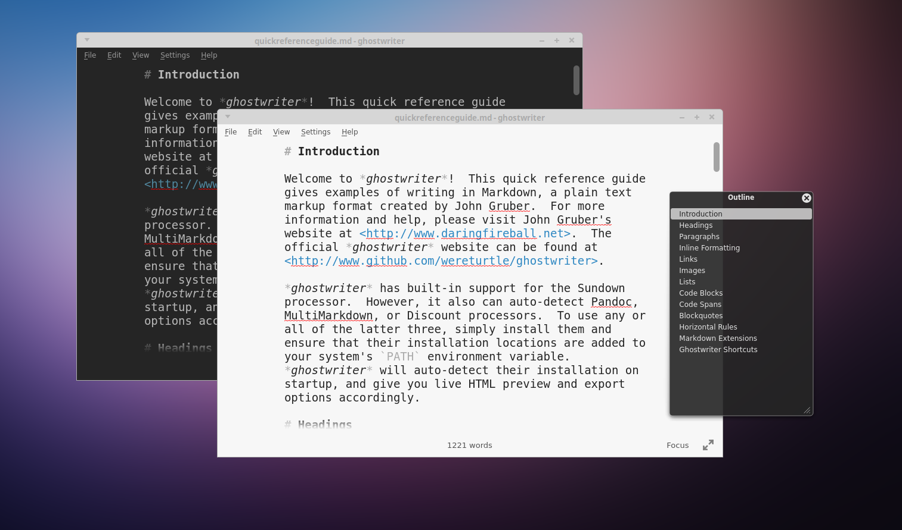
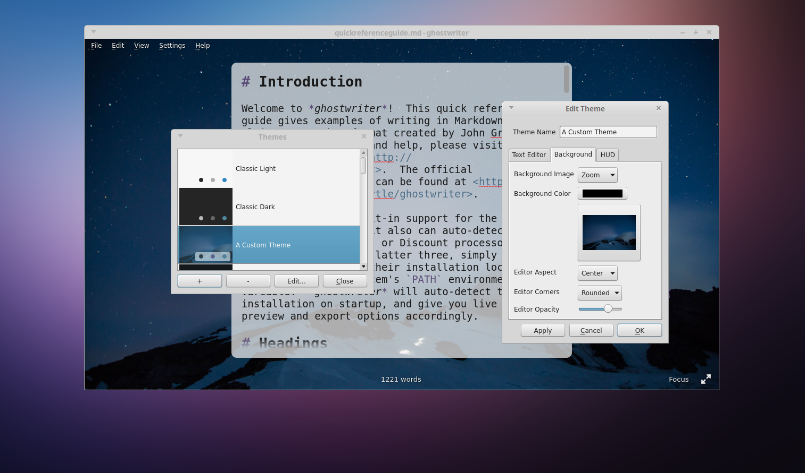
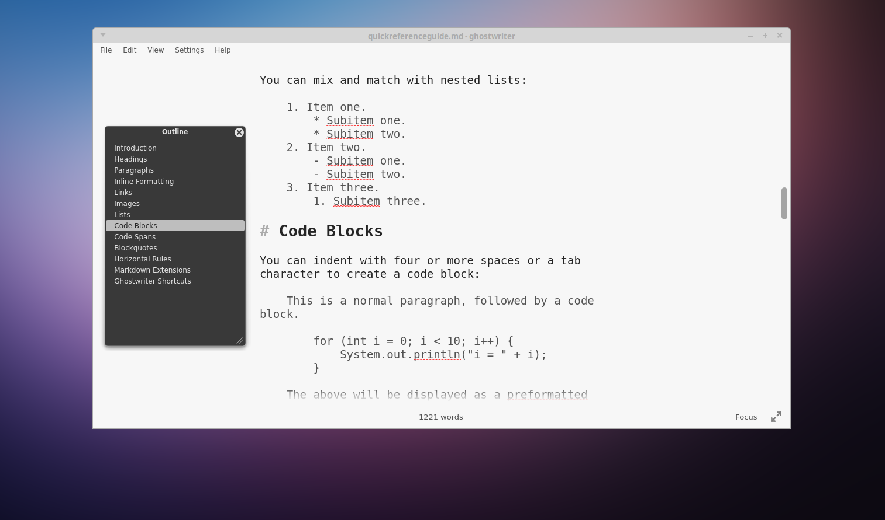
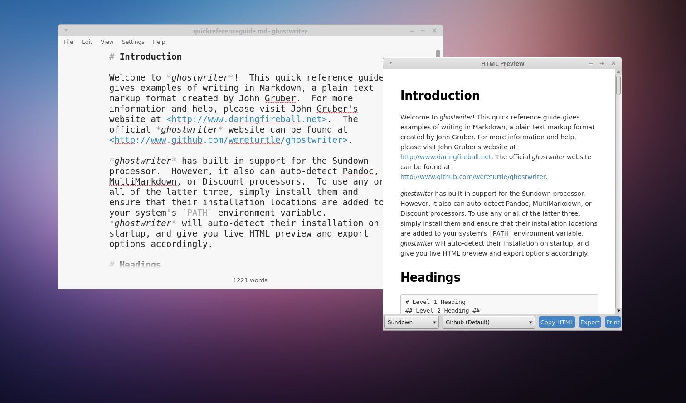
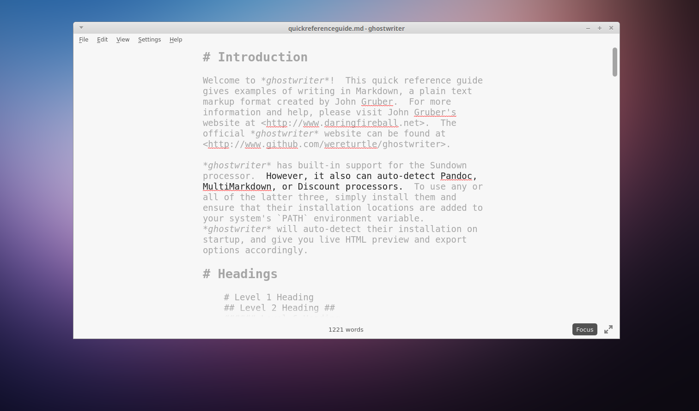
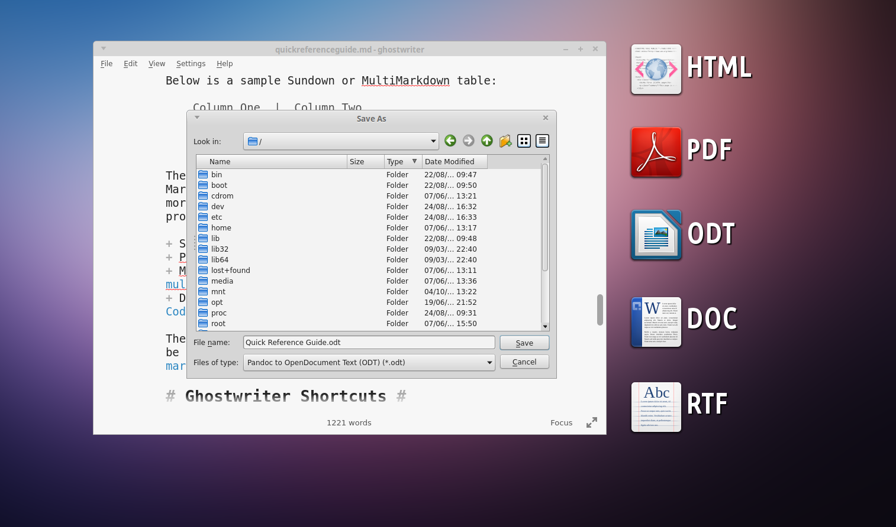

A distraction-free Markdown editor for Windows and Linux
Stylish. Open source. Free.

Enjoy built-in light and dark themes

Create your own themes for a more relaxing experience

Navigate your document with the Outline HUD

Preview your document in HTML as you type

Concentrate with fullscreen and focus modes

 View on GitHub
View on GitHub